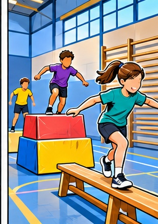

Acrobatics in Physical Education: Learning Balance, Trust and Cooperation Through Movement
Acrobatics in Physical Education is much more than performing impressive movements or developing physical skills. When thoughtfully designed, acrobatic and movement-based activities can help students develop balance, coordination, creativity, confidence, communication, trust and responsibility.

In a Physical Education lesson, the objective should not always be to achieve the most difficult movement. Sometimes, the most meaningful learning happens when students explore possibilities, solve movement problems, collaborate with others and reflect on their decisions.
Acrobatics offers a particularly rich context for this approach. Students can work with body shapes, balance, posture, transitions, sequencing and creative movement while learning to consider both their own choices and the people around them.
More Than Physical Skills
Acrobatic activities and movement challenges can provide opportunities to develop physical abilities such as:
- Balance and body control
- Coordination and spatial awareness
- Strength, stability and body awareness
- Flexibility and mobility
- Creativity and movement exploration
The educational value, however, extends beyond physical development. Students begin to think about how movements are performed, why some positions are more stable than others, how a sequence can be improved and what adjustments may help a group reach a shared goal. Movement becomes a learning process involving both the body and the mind.
Learning Through Movement: What, Who, Which and How?
A meaningful Physical Education lesson encourages students to understand not only what they are doing, but also the process behind their actions.
What are we learning?
Students explore fundamental movement concepts such as balance, body shapes, stability, transitions, control, levels and sequencing.
Who is involved?
Individual abilities, confidence, personal responsibility and awareness of others become important elements of the learning experience.
Which choices can we make?
Students make decisions, select movements, adapt ideas and search for different solutions to movement challenges.
How can we achieve our goal?
Through practice, exploration, communication, feedback, reflection and cooperation. Students become active participants in their learning rather than simply reproducing a movement demonstrated by the teacher.
Balance, Pressure and Creativity
Balance is one of the fundamental elements of acrobatics. Students can explore how changing body position, base of support, direction, level or weight distribution influences stability. Rather than immediately providing a solution, teachers can introduce carefully designed challenges and encourage experimentation.
- Can you create a stable shape using different body parts?
- Can you change position while maintaining control?
- Can you create a sequence using different levels?
- Can you move from one balance to another smoothly?
- Can your group create a shape that represents an idea or emotion?
The challenge is not simply to perform a movement correctly, but to understand it, adapt it and develop it. This approach supports creative thinking, problem-solving and movement awareness.
Trust, Safety and Responsibility
Partner and group acrobatics introduce another important dimension: trust. Students need to communicate clearly, listen to each other, understand their responsibilities and recognise the importance of safety.
Trust should not be treated as something that can simply be demanded. It develops progressively through positive experiences, clear expectations, appropriate challenges and mutual respect. A safe learning environment allows students to experiment within suitable boundaries, recognise their limitations and support others.
Safety is therefore not separate from learning. It is an essential part of the learning process. Activities should be adapted to students’ age, abilities, experience and the available equipment; complex partner or group skills require appropriate instruction, supervision and progressions.
Cooperation and Social Learning
Acrobatics and group movement tasks can create situations in which students need to work together to achieve something they could not accomplish individually. Through pair and group challenges, they can develop communication, cooperation, respect, responsibility, patience, problem-solving, leadership and teamwork.
The success of a group is not determined only by its final performance. It also depends on how students organise themselves, share ideas, listen, adapt and support one another. These experiences help students understand that learning is not always an individual process.
Movement Challenges: Practical Examples from Physical Education
Movement activities such as obstacle courses, balance tasks, hoops, ball games and cooperative challenges can provide accessible starting points for exploring these learning principles. The illustrations below show examples of movement-based tasks—not acrobatic skills themselves—but they represent the wider environment in which balance, body awareness, creativity and cooperation can be developed and then transferred into acrobatics.
The Teacher’s Role: Creating Opportunities to Learn
The role of the Physical Education teacher is not simply to demonstrate movements and ask students to repeat them. The teacher creates an environment in which learning can happen. This includes designing appropriate challenges, providing clear safety guidelines, adapting activities to different abilities, encouraging exploration, asking meaningful questions, supporting reflection, providing feedback and promoting inclusion.
The level of challenge should be appropriate for the students, allowing everyone to participate, progress and experience success. A student-centred approach does not mean leaving students without guidance; it means combining purposeful structure with space for initiative and decision-making.
Learning Beyond the Gym
Acrobatics can be a valuable example of how Physical Education contributes to personal and social development. Balance can become a way to explore managing challenges. Trust can develop through cooperation. Creativity can emerge through movement exploration. Responsibility can be experienced through decisions and actions. Respect can become visible in the way students work together.
Physical Education is not only about learning how to move. It is also about learning how to think, communicate, cooperate, take responsibility and interact with others.
Learning through movement. Preparing for life.
Explore more about my approach to Physical Education and learning through movement, or return to the Coach’s Blog for further reflections on sport, education and methodology.